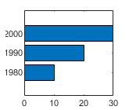
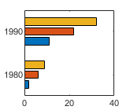
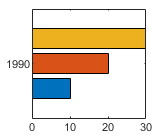
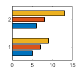
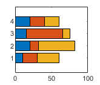
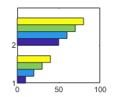
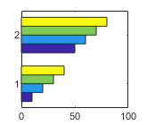

barh
Horizontal bar graph
Syntax
Description
barh(___, specifies the
fraction of available space occupied by each bar. For example, width)barh(y,1)
makes the bars in each group touch each other. Specify width as the last
argument in any of the previous syntaxes.
barh(___, specifies the
style of the bar groups. For example, style)barh(y,'stacked') stacks the bars
within each group into a multicolored bar.
barh(___, specifies a single
color for all the bars. For example, color)barh(y,'red') displays red
bars.
barh(___, specifies
properties of the bar graph using one or more name-value pair arguments. Only bar graphs
that use the default Name,Value)'grouped' or 'stacked' style
support setting bar properties. Specify the name-value pair arguments after all other input
arguments. For a list of properties, see Bar Properties.
barh( displays the bar
graph in the target axes. Specify the axes as the first argument in any of the previous
syntaxes.ax,___)
Examples
Create a vector of four values. Display the values in a bar graph with one horizontal bar for each value.
y = [10 20 30 41]; barh(y)

Define x as a matrix of three year values. Define y as a matrix containing snowfall data for four cities. Display the four series of bars in groups for each year. Then add the axis labels and a legend.
x = [1980 1990 2000]; y = [40 50 63 52; 42 55 50 48; 30 20 44 40]; barh(x,y) xlabel('Snowfall') ylabel('Year') legend({'Springfield','Fairview','Bristol','Jamesville'})

Since R2023b
Create a string vector x containing the names of four bars. Create a numeric vector y containing the lengths of the bars. Then create a bar chart of x and y.
x = ["Spring" "Summer" "Autumn" "Winter"]; y = [1 2 3 4]; barh(x,y)

Create matrix y. Then display the values of y in a bar graph with a baseline value of 25. Values that are less than 25 display on the left side of the baseline.
y = [8 15 33; 30 35 40; 50 55 62];
barh(y,'BaseValue',25)
Define x as a vector of three year values. Define y as a matrix that contains a combination of negative and positive values. Display the values in a stacked horizontal bar graph.
x = [1980 1990 2000];
y = [15 20 -5; 10 -17 21; -10 5 15];
barh(x,y,'stacked')
Define y as a vector of four values, and display the values in a horizontal bar graph. Then call the yticklabels function to change the tick labels on the vertical axis.
y = [10 20 30 41];
barh(y)
yticklabels({'April','May','June','July'})
One way to indicate categories for your bars is to specify X as a categorical array. The barh function uses a sorted list of the categories, so the bars might display in a different order than you expect. To preserve the order, call the reordercats function.
Define X as categorical array, and call the reordercats function to specify the order for the bars. Then define Y as a vector of bar lengths and display the bar graph.
X = categorical({'Small','Medium','Large','Extra Large'});
X = reordercats(X,{'Small','Medium','Large','Extra Large'});
Y = [10 21 33 52];
barh(X,Y)
Since R2024b
Create a matrix vals that contains two series of data. Display the data in a horizontal bar graph and specify an output argument. Because there are two series, barh returns a vector of two Bar objects.
x = [1 2 3]; vals = [2 3 6; 11 23 26]; b = barh(x,vals);

Display the bar values, stored in the YData property, at the tips of the first series of bars.
b(1).Labels = b(1).YData;

Then label the second series of bars in the same way.
b(2).Labels = b(2).YData;

As an alternative to using the Labels property to specify bar labels, you can use the text function to create the labels and position them using the XEndPoints and YEndPoints properties.
Create a matrix vals that contains two series of data. Display the data in a horizontal bar graph and specify an output argument. Because there are two series, barh returns a vector of two Bar objects.
x = [1 2 3]; vals = [2 3 6; 11 23 26]; b = barh(x,vals);

Display the bar values at the tips of the first series of bars. Get the coordinates of the tips of the bars by getting the XEndPoints and YEndPoints properties of the first Bar object. Because horizontal bar graphs have rotated axes, switch the values of XEndPoints and YEndPoints before passing them to the text function. Add a padding value of 0.3 to YEndpoints so that the text does not touch the edges of the bars. Then call the text function to display the labels.
xtips1 = b(1).YEndPoints + 0.3; ytips1 = b(1).XEndPoints; labels1 = string(b(1).YData); text(xtips1,ytips1,labels1,'VerticalAlignment','middle')

Next, follow the same steps to display the values at the tips of the second series of bars.
xtips2 = b(2).YEndPoints + 0.3; ytips2 = b(2).XEndPoints; labels2 = string(b(2).YData); text(xtips2,ytips2,labels2,'VerticalAlignment','middle')

Create and display data in a horizontal bar graph that has red bars with a thickness of 0.4.
y = [10 22 30 42];
width = 0.4;
barh(y,width,'red');
Create matrix y in which each column is a series of data. Then display the data in a bar graph, specifying an output argument when calling the barh function. In this case, barh returns a vector of three Bar objects. Each object corresponds to a different series.
y = [10 15 20; 30 35 40; 50 55 62]; b = barh(y);

Modify the second series of bars to be green with thick red edges.
b(2).FaceColor = [.2 .6 .5]; b(2).EdgeColor = [.63 .08 .18]; b(2).LineWidth = 2;

Create and display data in two different bar graphs using the default 'grouped' style and the 'stacked' style.
x = [1980 1990 2000]; y = [8 15 25; 30 35 40; 50 55 62]; % Grouped tiledlayout(2,1); ax1 = nexttile; barh(ax1,x,y) title('Grouped Style') % Stacked ax2 = nexttile; barh(ax2,x,y,'stacked') title('Stacked Style')

Input Arguments
Vertical axis coordinates, specified as a scalar, vector, matrix, string array, or
cell array of character vectors. The values of x do not need to be in
order.
If you specify x as a string array or cell array of character
vectors, the values must be unique. MATLAB® stores the values as a categorical array, and the bars display in the
order you specify.
This table describes some common ways to present your data.
| Presentation | How to Specify X and Y | Example |
|---|---|---|
| Display one series of bars. | Specify |
x = [1980 1990 2000]; y = [10 20 30]; barh(x,y)

|
| Display multiple series of bars in groups. | Specify either of these combinations:
| x = [1980 1980 1980
1990 1990 1990];
y = [2 6 9
11 22 32];
barh(x,y)x = [1980 1990];
y = [2 6 9
11 22 32];
barh(x,y)

|
Display one group of bars centered at one x
value. | Specify |
x = 1990; y = [10 20 30]; barh(x,y)

|
Data Types: single | double | int8 | int16 | int32 | int64 | uint8 | uint16 | uint32 | uint64 | categorical | datetime | duration | string (since R2023b) | cell (since R2023b)
Bar lengths, specified as a scalar, vector, or matrix. The size of
y depends on the size of x and how you want to
display your data. This table describes the most common situations.
| Presentation | How to Specify X and Y | Example |
|---|---|---|
| Display one series of bars. | Specify |
x = [1980 1990 2000]; y = [10 20 30]; barh(x,y)
|
| Display multiple series of bars in groups. | Specify either of these combinations:
| x = [1980 1980 1980
1990 1990 1990];
y = [2 6 9
11 22 32];
barh(x,y)x = [1980 1990];
y = [2 6 9
11 22 32];
barh(x,y)
|
Display one group of bars centered at one x
value. | Specify |
x = 1990; y = [10 20 30]; barh(x,y)
|
Data Types: single | double | int8 | int16 | int32 | int64 | uint8 | uint16 | uint32 | uint64 | duration
Bar thickness, specified as a fraction of the total space available for each bar.
The default of 0.8 means each bar uses 80% of the space from the
previous bar to the next bar, with 10% of empty space on either side.
If the thickness is 1, then the bars within a group touch one
another.
Example: barh([1 2 3],0.5) creates bars that use 50% of the
available space.
Group style, specified by one of these values.
| Style | Result | Example |
|---|---|---|
| Display each group as adjacent bars that are centered around the
corresponding |

|
| Display each group as one multicolored bar. The length of a bar is the sum of the elements in the group. If |

|
| Display the bars in histogram format, in which the bars in a group
touch one another. The trailing edge of each group is aligned with the
corresponding Note A better way to display a horizontal histogram is to call the |

|
| Display the bars in histogram format. Each group is centered at the
corresponding Note A better way to display a horizontal histogram is to call the |

|
Bar color, specified as one of the options in this table.
| Color Name | Short Name | Appearance |
|---|---|---|
'red' | 'r' |
|
'green' | 'g' |
|
'blue' | 'b' |
|
'cyan'
| 'c' |
|
'magenta' | 'm' |
|
'yellow' | 'y' |
|
'black' | 'k' |
|
'white' | 'w' |
|
Target axes, specified as an Axes object. If you do not specify
the axes, then the bar graph displays in the current axes.
Name-Value Arguments
Specify optional pairs of arguments as
Name1=Value1,...,NameN=ValueN, where Name is
the argument name and Value is the corresponding value.
Name-value arguments must appear after other arguments, but the order of the
pairs does not matter.
Before R2021a, use commas to separate each name and value, and enclose
Name in quotes.
Example: barh([10 20 30],'EdgeColor','g') specifies a green outline
around the bars.
Note
The properties listed here are only a subset. For a complete list, see Bar Properties.
You can set these properties only on bar graphs that use the default
'grouped'or'stacked'style.
Outline color, specified as 'flat', an RGB triplet, a hexadecimal
color code, a color name, or a short name. If there are 150 bars or fewer, the default
value is [0 0 0], which corresponds to black. If there are more than
150 adjacent bars, the default value is 'none'.
Starting in R2017b, the 'flat' option uses the
CData values to color the edges. In previous releases, the
'flat' option colored the edges using colors from the
colormap.
For a custom color, specify an RGB triplet or a hexadecimal color code.
An RGB triplet is a three-element row vector whose elements specify the intensities of the red, green, and blue components of the color. The intensities must be in the range
[0,1], for example,[0.4 0.6 0.7].A hexadecimal color code is a string scalar or character vector that starts with a hash symbol (
#) followed by three or six hexadecimal digits, which can range from0toF. The values are not case sensitive. Therefore, the color codes"#FF8800","#ff8800","#F80", and"#f80"are equivalent.
Alternatively, you can specify some common colors by name. This table lists the named color options, the equivalent RGB triplets, and the hexadecimal color codes.
| Color Name | Short Name | RGB Triplet | Hexadecimal Color Code | Appearance |
|---|---|---|---|---|
"red" | "r" | [1 0 0] | "#FF0000" |
|
"green" | "g" | [0 1 0] | "#00FF00" |
|
"blue" | "b" | [0 0 1] | "#0000FF" |
|
"cyan"
| "c" | [0 1 1] | "#00FFFF" |
|
"magenta" | "m" | [1 0 1] | "#FF00FF" |
|
"yellow" | "y" | [1 1 0] | "#FFFF00" |
|
"black" | "k" | [0 0 0] | "#000000" |
|
"white" | "w" | [1 1 1] | "#FFFFFF" |
|
"none" | Not applicable | Not applicable | Not applicable | No color |
This table lists the default color palettes for plots in the light and dark themes.
| Palette | Palette Colors |
|---|---|
Before R2025a: Most plots use these colors by default. |
|
|
|
You can get the RGB triplets and hexadecimal color codes for these palettes using the orderedcolors and rgb2hex functions. For example, get the RGB triplets for the "gem" palette and convert them to hexadecimal color codes.
RGB = orderedcolors("gem");
H = rgb2hex(RGB);Before R2023b: Get the RGB triplets using RGB =
get(groot,"FactoryAxesColorOrder").
Before R2024a: Get the hexadecimal color codes using H =
compose("#%02X%02X%02X",round(RGB*255)).
Example: b = bar(1:10,'EdgeColor','red')
Example: b.EdgeColor = [0 0.5 0.5];
Example: b.EdgeColor = 'flat';
Example: b.EdgeColor = '#D2F9A7';
Fill color, specified as 'flat', an RGB triplet, a hexadecimal
color code, a color name, or a short name. The 'flat' option uses the
CData property value of the Bar object to
color the faces.
For a custom color, specify an RGB triplet or a hexadecimal color code.
An RGB triplet is a three-element row vector whose elements specify the intensities of the red, green, and blue components of the color. The intensities must be in the range
[0,1], for example,[0.4 0.6 0.7].A hexadecimal color code is a string scalar or character vector that starts with a hash symbol (
#) followed by three or six hexadecimal digits, which can range from0toF. The values are not case sensitive. Therefore, the color codes"#FF8800","#ff8800","#F80", and"#f80"are equivalent.
Alternatively, you can specify some common colors by name. This table lists the named color options, the equivalent RGB triplets, and the hexadecimal color codes.
| Color Name | Short Name | RGB Triplet | Hexadecimal Color Code | Appearance |
|---|---|---|---|---|
"red" | "r" | [1 0 0] | "#FF0000" |
|
"green" | "g" | [0 1 0] | "#00FF00" |
|
"blue" | "b" | [0 0 1] | "#0000FF" |
|
"cyan"
| "c" | [0 1 1] | "#00FFFF" |
|
"magenta" | "m" | [1 0 1] | "#FF00FF" |
|
"yellow" | "y" | [1 1 0] | "#FFFF00" |
|
"black" | "k" | [0 0 0] | "#000000" |
|
"white" | "w" | [1 1 1] | "#FFFFFF" |
|
"none" | Not applicable | Not applicable | Not applicable | No color |
This table lists the default color palettes for plots in the light and dark themes.
| Palette | Palette Colors |
|---|---|
Before R2025a: Most plots use these colors by default. |
|
|
|
You can get the RGB triplets and hexadecimal color codes for these palettes using the orderedcolors and rgb2hex functions. For example, get the RGB triplets for the "gem" palette and convert them to hexadecimal color codes.
RGB = orderedcolors("gem");
H = rgb2hex(RGB);Before R2023b: Get the RGB triplets using RGB =
get(groot,"FactoryAxesColorOrder").
Before R2024a: Get the hexadecimal color codes using H =
compose("#%02X%02X%02X",round(RGB*255)).
Starting in R2017b, the default value is an RGB triplet from the
ColorOrder property of the axes. In previous releases, the
default value was 'flat' and the colors were based on the
colormap.
Example: b = bar(1:10,'FaceColor','red')
Example: b.FaceColor = [0 0.5 0.5];
Example: b.FaceColor = 'flat';
Example: b.FaceColor = '#D2F9A7';